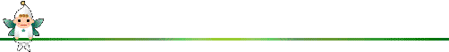

★ここのアイコンは
Web Toy Box/ホームページのおもちゃ箱
さんからいただきました★
（
ご使用上の注意
）

はじめてホームページをつくる時に、私のページの基調になるマークを探していました。
誰からも好感をもたれるもの
にしたかったのですが、ちょっとかわいらしすぎたかなぁ(^^ゞ。。その後、背景をオレンジピンク（#ffdab9）にして
夕暮れの妖精
にしてみました。最初に作った
ごあいさつ
、
自己紹介
、
ミニアルバム
に使っています。
また、
日記
の
日記検索
は、
ピンクと赤の妖精
がちょうちんを持って
探しもの（検索）
をしているところをイメージしたつもり(^^)
★他のページのご使用例★
香港にお住まいの日本人、
ヴィヴィアンさんの
びびのはらたち日記
には赤い妖精が採用されました(^^)
(Jan. 25, 1998)
HANAEさんのページ
の
「今日な〜にがあった？」
には妖精のお友達、小人たちが住んでいます(^^)
(Feb. 4, 1998)
[アイコンのインデックスに戻る]
[ホームへ]